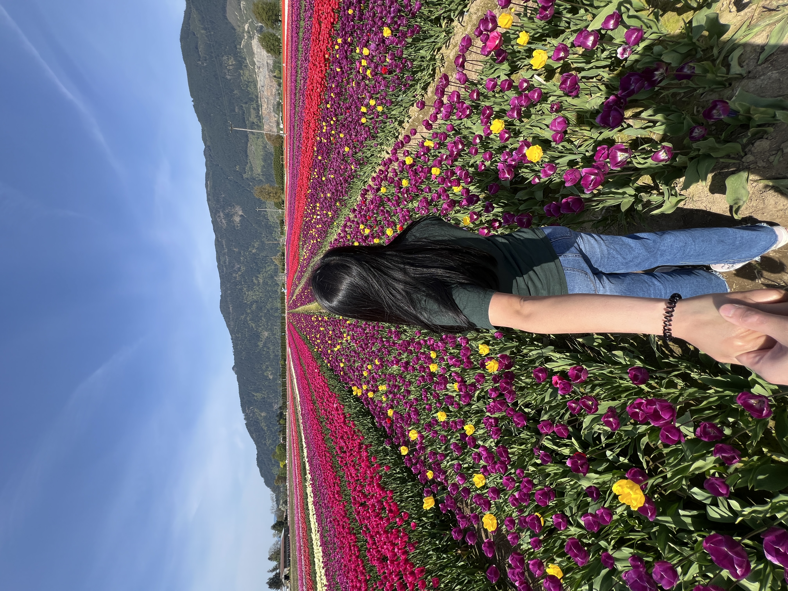

April 25, 2025
Abbotsford Tulip Festival
We flew from Edmonton to Abbotsford early that morning, just to spend the day surrounded by flowers. It was me, Sarah, Tita Lani, and Tita Lani’s friend. After landing at YXX, we picked up a Tesla — my first time ever driving one — and headed straight for Lakeland Flowers.

Flower Notes
Rows of pink, red, orange, white, and yellow tulips stretched out in every direction. With the mountains in the distance and flowering trees around the edges, the whole place felt almost unreal.
The Day
We flew in early, picked up the Tesla, drove to the flower field, wandered through the rows, took way too many photos, and just enjoyed being there. Nothing complicated — just a really good day together.
The day started before the sun had really gotten going. We were up early in Edmonton, heading to the airport for our flight to Abbotsford. It sounds a little crazy to fly somewhere just to look at flowers, but that was basically the plan — and honestly, it was worth it.
After landing at YXX, we picked up the Tesla we had rented. I had never driven one before, so even getting out of the airport felt like part of the adventure. It was incredibly quiet and smooth, and definitely made the drive to Lakeland Flowers a little more memorable.
Once we arrived, the flowers immediately took over. There were rows and rows of tulips in almost every colour you could imagine. Pink, red, orange, yellow, and white stretched across the field, with the mountains sitting behind everything. The combination made the whole place look like a postcard.
We took our time walking around, stopping whenever something caught our attention. There wasn't really a schedule beyond seeing the flowers and enjoying the day. We took photos, joked around, walked through the rows, and eventually just sat down for a bit.
Looking back through the photos, what I like most is how the day gradually changed. The first pictures are from the early morning before everything was busy, and by the time we reached the later photos, the field was full of people and colour.
It was a simple trip, but those are sometimes the ones that stick with you. A very early flight, a first drive in a Tesla, a field full of tulips, and a day spent with people I enjoy being around. Not a bad reason to wake up ridiculously early.


After spending the morning at the tulip fields, we headed into Vancouver for the rest of the day. One of our stops was Cowdog, and we spent the remaining hours exploring the city, grabbing some food, and enjoying the afternoon before it was time to head back to the airport.
Eventually, it was time to say goodbye to British Columbia and make our way back to YXX. Our flight to Edmonton was at 6:00 PM, so we wrapped up the day, returned the Tesla, and headed to the airport.
It was a surprisingly full day for a trip that started with an early-morning flight from Edmonton. Flowers in Abbotsford, a first drive in a Tesla, some time in Vancouver, and then a flight home all in the same day. Definitely worth the early wake-up.